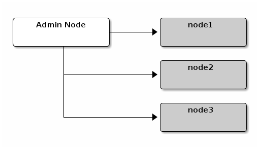

Manual Deployment¶
All Ceph clusters require at least one monitor, and at least as many OSDs as copies of an object stored on the cluster. Bootstrapping the initial monitor(s) is the first step in deploying a Ceph Storage Cluster. Monitor deployment also sets important criteria for the entire cluster, such as the number of replicas for pools, the number of placement groups per OSD, the heartbeat intervals, whether authentication is required, etc. Most of these values are set by default, so it’s useful to know about them when setting up your cluster for production.
Following the same configuration as Installation (Quick), we will set up a cluster with node1 as the monitor node, and node2 and node3 for OSD nodes.

Monitor Bootstrapping¶
Bootstrapping a monitor (a Ceph Storage Cluster, in theory) requires a number of things:
Unique Identifier: The fsid is a unique identifier for the cluster, and stands for File System ID from the days when the Ceph Storage Cluster was principally for the Ceph Filesystem. Ceph now supports native interfaces, block devices, and object storage gateway interfaces too, so fsid is a bit of a misnomer.
Cluster Name: Ceph clusters have a cluster name, which is a simple string without spaces. The default cluster name is ceph, but you may specify a different cluster name. Overriding the default cluster name is especially useful when you are working with multiple clusters and you need to clearly understand which cluster your are working with.
For example, when you run multiple clusters in a federated architecture, the cluster name (e.g., us-west, us-east) identifies the cluster for the current CLI session. Note: To identify the cluster name on the command line interface, specify the a Ceph configuration file with the cluster name (e.g., ceph.conf, us-west.conf, us-east.conf, etc.). Also see CLI usage (ceph --cluster {cluster-name}).
Monitor Name: Each monitor instance within a cluster has a unique name. In common practice, the Ceph Monitor name is the host name (we recommend one Ceph Monitor per host, and no commingling of Ceph OSD Daemons with Ceph Monitors). You may retrieve the short hostname with hostname -s.
Monitor Map: Bootstrapping the initial monitor(s) requires you to generate a monitor map. The monitor map requires the fsid, the cluster name (or uses the default), and at least one host name and its IP address.
Monitor Keyring: Monitors communicate with each other via a secret key. You must generate a keyring with a monitor secret and provide it when bootstrapping the initial monitor(s).
Administrator Keyring: To use the ceph CLI tools, you must have a client.admin user. So you must generate the admin user and keyring, and you must also add the client.admin user to the monitor keyring.
The foregoing requirements do not imply the creation of a Ceph Configuration file. However, as a best practice, we recommend creating a Ceph configuration file and populating it with the fsid, the mon initial members and the mon host settings.
You can get and set all of the monitor settings at runtime as well. However, a Ceph Configuration file may contain only those settings that override the default values. When you add settings to a Ceph configuration file, these settings override the default settings. Maintaining those settings in a Ceph configuration file makes it easier to maintain your cluster.
The procedure is as follows:
Log in to the initial monitor node(s):
ssh {hostname}For example:
ssh node1
Ensure you have a directory for the Ceph configuration file. By default, Ceph uses /etc/ceph. When you install ceph, the installer will create the /etc/ceph directory automatically.
ls /etc/ceph
Note: Deployment tools may remove this directory when purging a cluster (e.g., ceph-deploy purgedata {node-name}, ceph-deploy purge {node-name}).
Create a Ceph configuration file. By default, Ceph uses ceph.conf, where ceph reflects the cluster name.
sudo vim /etc/ceph/ceph.conf
Generate a unique ID (i.e., fsid) for your cluster.
uuidgenAdd the unique ID to your Ceph configuration file.
fsid = {UUID}
For example:
fsid = a7f64266-0894-4f1e-a635-d0aeaca0e993
Add the initial monitor(s) to your Ceph configuration file.
mon initial members = {hostname}[,{hostname}]For example:
mon initial members = node1
Add the IP address(es) of the initial monitor(s) to your Ceph configuration file and save the file.
mon host = {ip-address}[,{ip-address}]For example:
mon host = 192.168.0.1
Note: You may use IPv6 addresses too, but you must set ms bind ipv6 to true. See Network Configuration Reference for details about network configuration.
Create a keyring for your cluster and generate a monitor secret key.
ceph-authtool --create-keyring /tmp/ceph.mon.keyring --gen-key -n mon. --cap mon 'allow *'
Generate an administrator keyring, generate a client.admin user and add the user to the keyring.
ceph-authtool --create-keyring /etc/ceph/ceph.client.admin.keyring --gen-key -n client.admin --set-uid=0 --cap mon 'allow *' --cap osd 'allow *' --cap mds 'allow'
Add the client.admin key to the ceph.mon.keyring.
ceph-authtool /tmp/ceph.mon.keyring --import-keyring /etc/ceph/ceph.client.admin.keyring
Generate a monitor map using the hostname(s), host IP address(es) and the FSID. Save it as /tmp/monmap:
monmaptool --create --add {hostname} {ip-address} --fsid {uuid} /tmp/monmapFor example:
monmaptool --create --add node1 192.168.0.1 --fsid a7f64266-0894-4f1e-a635-d0aeaca0e993 /tmp/monmap
Create a default data directory (or directories) on the monitor host(s).
sudo mkdir /var/lib/ceph/mon/{cluster-name}-{hostname}For example:
sudo mkdir /var/lib/ceph/mon/ceph-node1
See Monitor Config Reference - Data for details.
Populate the monitor daemon(s) with the monitor map and keyring.
ceph-mon [--cluster {cluster-name}] --mkfs -i {hostname} --monmap /tmp/monmap --keyring /tmp/ceph.mon.keyringFor example:
ceph-mon --mkfs -i node1 --monmap /tmp/monmap --keyring /tmp/ceph.mon.keyring
Consider settings for a Ceph configuration file. Common settings include the following:
[global] fsid = {cluster-id} mon initial members = {hostname}[, {hostname}] mon host = {ip-address}[, {ip-address}] public network = {network}[, {network}] cluster network = {network}[, {network}] auth cluster required = cephx auth service required = cephx auth client required = cephx osd journal size = {n} filestore xattr use omap = true osd pool default size = {n} # Write an object n times. osd pool default min size = {n} # Allow writing n copy in a degraded state. osd pool default pg num = {n} osd pool default pgp num = {n} osd crush chooseleaf type = {n}In the foregoing example, the [global] section of the configuration might look like this:
[global] fsid = a7f64266-0894-4f1e-a635-d0aeaca0e993 mon initial members = node1 mon host = 192.168.0.1 public network = 192.168.0.0/24 auth cluster required = cephx auth service required = cephx auth client required = cephx osd journal size = 1024 filestore xattr use omap = true osd pool default size = 2 osd pool default min size = 1 osd pool default pg num = 333 osd pool default pgp num = 333 osd crush chooseleaf type = 1
Touch the done file.
Mark that the monitor is created and ready to be started:
sudo touch /var/lib/ceph/mon/ceph-node1/done
Start the monitor(s).
For Ubuntu, use Upstart:
sudo start ceph-mon id=node1 [cluster={cluster-name}]In this case, to allow the start of the daemon at each reboot you must create two empty files like this:
sudo touch /var/lib/ceph/mon/{cluster-name}-{hostname}/upstartFor example:
sudo touch /var/lib/ceph/mon/ceph-node1/upstart
For Debian/CentOS/RHEL, use sysvinit:
sudo /etc/init.d/ceph start mon.node1
Verify that Ceph created the default pools.
ceph osd lspools
You should see output like this:
0 data,1 metadata,2 rbd,
Verify that the monitor is running.
ceph -s
You should see output that the monitor you started is up and running, and you should see a health error indicating that placement groups are stuck inactive. It should look something like this:
cluster a7f64266-0894-4f1e-a635-d0aeaca0e993 health HEALTH_ERR 192 pgs stuck inactive; 192 pgs stuck unclean; no osds monmap e1: 1 mons at {node1=192.168.0.1:6789/0}, election epoch 1, quorum 0 node1 osdmap e1: 0 osds: 0 up, 0 in pgmap v2: 192 pgs, 3 pools, 0 bytes data, 0 objects 0 kB used, 0 kB / 0 kB avail 192 creatingNote: Once you add OSDs and start them, the placement group health errors should disappear. See the next section for details.
Adding OSDs¶
Once you have your initial monitor(s) running, you should add OSDs. Your cluster cannot reach an active + clean state until you have enough OSDs to handle the number of copies of an object (e.g., osd pool default size = 2 requires at least two OSDs). After bootstrapping your monitor, your cluster has a default CRUSH map; however, the CRUSH map doesn’t have any Ceph OSD Daemons mapped to a Ceph Node.
Short Form¶
Ceph provides the ceph-disk utility, which can prepare a disk, partition or directory for use with Ceph. The ceph-disk utility creates the OSD ID by incrementing the index. Additionally, ceph-disk will add the new OSD to the CRUSH map under the host for you. Execute ceph-disk -h for CLI details. The ceph-disk utility automates the steps of the Long Form below. To create the first two OSDs with the short form procedure, execute the following on node2 and node3:
Prepare the OSD.
ssh {node-name} sudo ceph-disk prepare --cluster {cluster-name} --cluster-uuid {uuid} --fs-type {ext4|xfs|btrfs} {data-path} [{journal-path}]For example:
ssh node1 sudo ceph-disk prepare --cluster ceph --cluster-uuid a7f64266-0894-4f1e-a635-d0aeaca0e993 --fs-type ext4 /dev/hdd1
Activate the OSD:
sudo ceph-disk activate {data-path} [--activate-key {path}]For example:
sudo ceph-disk activate /dev/hdd1
Note: Use the --activate-key argument if you do not have a copy of /var/lib/ceph/bootstrap-osd/{cluster}.keyring on the Ceph Node.
Long Form¶
Without the benefit of any helper utilities, creating an OSD and adding it to the cluster and CRUSH map the following procedure. To create the first two OSDs with the long form procedure, execute the following on node2 and node3:
Connect to the OSD host.
ssh {node-name}Generate a UUID for the OSD.
uuidgenCreate the OSD. If no UUID is given, it will be set automatically when the OSD starts up. The following command will output the OSD number, which you will need for subsequent steps.
ceph osd create [{uuid} [{id}]]Create the default directory on your new OSD.
ssh {new-osd-host} sudo mkdir /var/lib/ceph/osd/{cluster-name}-{osd-number}If the OSD is for a drive other than the OS drive, prepare it for use with Ceph, and mount it to the directory you just created:
ssh {new-osd-host} sudo mkfs -t {fstype} /dev/{hdd} sudo mount -o user_xattr /dev/{hdd} /var/lib/ceph/osd/{cluster-name}-{osd-number}Initialize the OSD data directory.
ssh {new-osd-host} sudo ceph-osd -i {osd-num} --mkfs --mkkey --osd-uuid [{uuid}]The directory must be empty before you can run ceph-osd with the --mkkey option. In addition, the ceph-osd tool requires specification of custom cluster names with the --cluster option.
Register the OSD authentication key. The value of ceph for ceph-{osd-num} in the path is the $cluster-$id. If your cluster name differs from ceph, use your cluster name instead.:
sudo ceph auth add osd.{osd-num} osd 'allow *' mon 'allow profile osd' -i /var/lib/ceph/osd/{cluster-name}-{osd-num}/keyringAdd your Ceph Node to the CRUSH map.
ceph [--cluster {cluster-name}] osd crush add-bucket {hostname} hostFor example:
ceph osd crush add-bucket node1 host
Place the Ceph Node under the root default.
ceph osd crush move node1 root=default
Add the OSD to the CRUSH map so that it can begin receiving data. You may also decompile the CRUSH map, add the OSD to the device list, add the host as a bucket (if it’s not already in the CRUSH map), add the device as an item in the host, assign it a weight, recompile it and set it.
ceph [--cluster {cluster-name}] osd crush add {id-or-name} {weight} [{bucket-type}={bucket-name} ...]For example:
ceph osd crush add osd.0 1.0 host=node1
After you add an OSD to Ceph, the OSD is in your configuration. However, it is not yet running. The OSD is down and in. You must start your new OSD before it can begin receiving data.
For Ubuntu, use Upstart:
sudo start ceph-osd id={osd-num} [cluster={cluster-name}]For example:
sudo start ceph-osd id=0 sudo start ceph-osd id=1
For Debian/CentOS/RHEL, use sysvinit:
sudo /etc/init.d/ceph start osd.{osd-num} [--cluster {cluster-name}]For example:
sudo /etc/init.d/ceph start osd.0 sudo /etc/init.d/ceph start osd.1
In this case, to allow the start of the daemon at each reboot you must create an empty file like this:
sudo touch /var/lib/ceph/osd/{cluster-name}-{osd-num}/sysvinitFor example:
sudo touch /var/lib/ceph/osd/ceph-0/sysvinit sudo touch /var/lib/ceph/osd/ceph-1/sysvinit
Once you start your OSD, it is up and in.
Summary¶
Once you have your monitor and two OSDs up and running, you can watch the placement groups peer by executing the following:
ceph -w
To view the tree, execute the following:
ceph osd tree
You should see output that looks something like this:
# id weight type name up/down reweight
-1 2 root default
-2 2 host node1
0 1 osd.0 up 1
-3 1 host node2
1 1 osd.1 up 1
To add (or remove) additional monitors, see Add/Remove Monitors. To add (or remove) additional Ceph OSD Daemons, see Add/Remove OSDs.